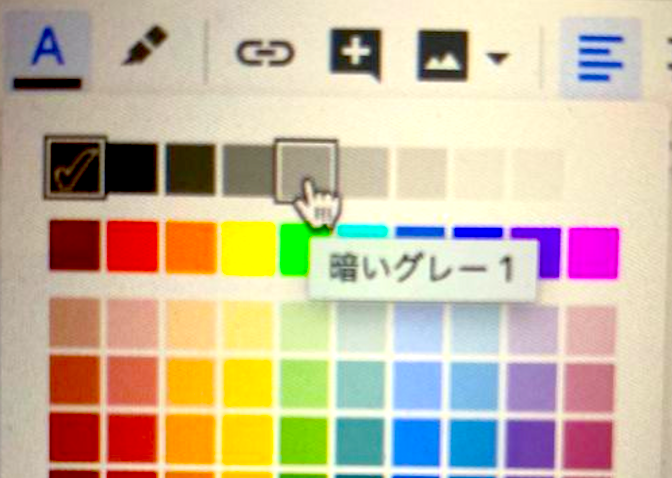

指定された見出しやフォントを使って記載すると、claatコマンドで所定の変換が行われる。
サンプルコードはフォントを変えておくことで記載できる。
// 1セルのみのテーブルを挿入し、中身をCourier Newフォントにしておくとシンタックスハイライトをしたコードになる。
type Resource struct {
ID int64 `json:"id" xml:"id"`
Data []string `json:"data,omitempty" xml:"data"`
}Duration: と書いて、dark gray 1（暗いグレー1）にしておくとセクションの所要時間を書くことができる。カラーパレットのどの色が対応しているのかは、マウスホバーすればどれがどんな名前の色なのかはすぐわかる。

コマンドラインの実行結果をを示したいときはConsolasフォントで書くと変換される。
ソースコードの場合はCourier Newフォントで書くと変換される。これらは文中でも適用される。
$ pwd /Users/budougumi0617/go/src/github.com/budougumi0617/claat-sample $ ls codelab.json img index.html
// LoadConfig loads AWS setting with option.
func LoadConfig(region string) (aws.Config, error) {
// FIXME Need to set flexible amount of option
cfg, err := external.LoadDefaultAWSConfig()
if err != nil {
return aws.Config{}, err
}
if len(region) != 0 {
cfg.Region = region
}
return cfg, nil
}表1: 表も普通に書ける
列タイトル1 | 列タイトル2 |
内容 | 内容 |
なにか | なにか |
その他にもダウンロードボタンを作ったりもできる。
記法の詳細は以下のDocを確認すること。アクセス権限が必要だがリクエストをすればすぐ承認される。
GItHubでも見れるが、Docで見たほうが「Docとしての記述」をすぐコピペできるので効率的だ。
https://github.com/googlecodelabs/tools/blob/master/FORMAT-GUIDE.md